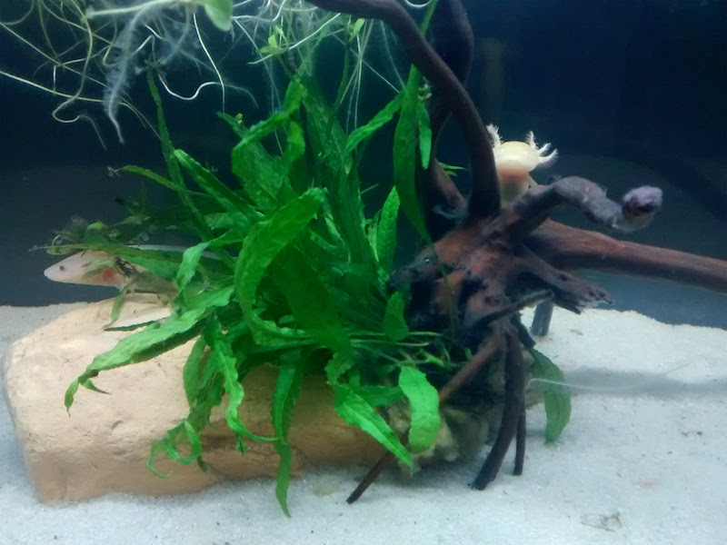

Los Axolotes de Hugo

¿Qué son los Axolotes?
- Nombre:
- Axolote, Ajolote, Axolotl
- Nombre Científico:
- Ambystoma Mexicanum
- Tipo:
- Anfibio
- Dieta:
- Carnívora
- Vive en:
- América central y en el Caribe
- Zonas donde encontrarlos:
- Ríos, marismas, pantanos y lagos
- Peso:
- 60-227gr
- Tamaño:
- 10-30cm
- ¡Están en peligro de extincion!